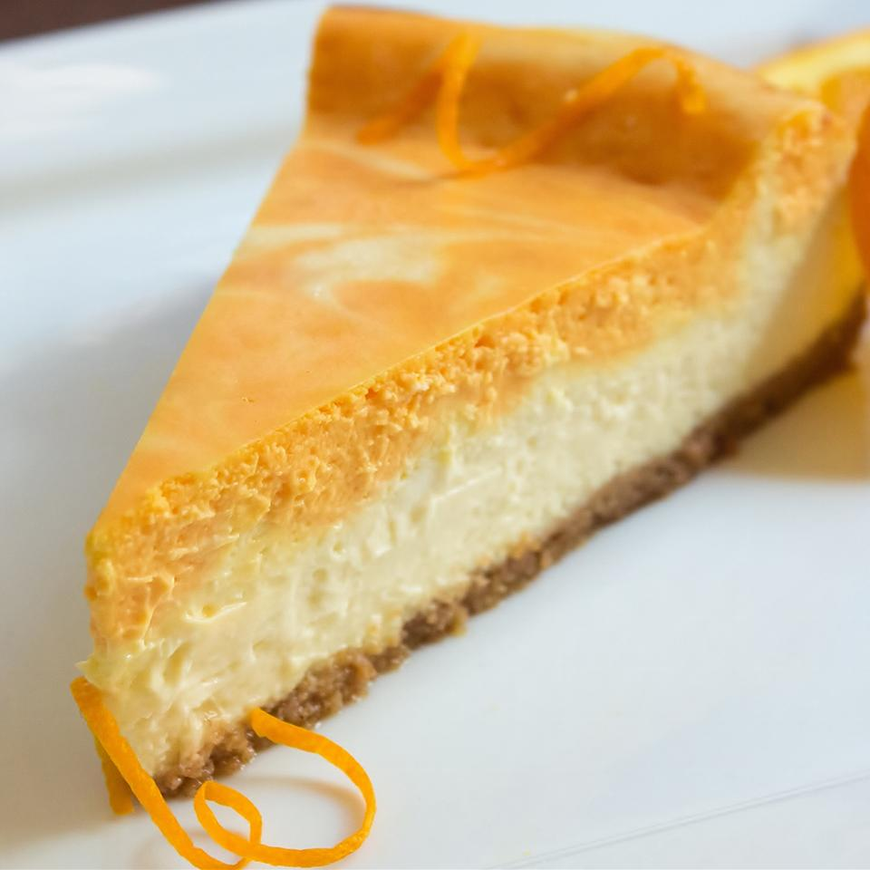

Cheesecake

Description
This fabulous cheesecake will remind you of Mayfield
creamsicle ice cream with every bite you take! I love it!
Ingredients
- 2 (8 ounce) packages cream cheese, softened
- ½ cup white sugar
- 2 eggs
- ¾ cup sour cream
- 1 teaspoon vanilla extract
- 1 teaspoon orange extract
- 2 drops yellow food coloring
- 1 drop red food coloring
- 1 (9 inch) prepared graham cracker crust
Steps
- Preheat oven to 350 degrees F (175 degrees C).
- Beat cream cheese and sugar together in a large bowl with an electric mixer until light and fluffy; add eggs and beat
well. Beat sour cream and vanilla extract into cream cheese mixture until batter is smooth.
- Transfer one cup of the cream cheese mixture to a small bowl and stir in orange extract, yellow food coloring, and red
food coloring until batter is smooth and orange.
- Pour uncolored batter into prepared graham cracker crust. Drop spoonfuls of orange batter over the top of the uncolored
batter and run a knife through the orange batter to
create a marbled effect.
- Bake in the preheated oven until the edges are firm and center is slightly loose, 30 to 35 minutes. Cool at room
temperature for 1 hour. Cover cheesecake with plastic wrap
and chill in the refrigerator, 8 hours to overnight.